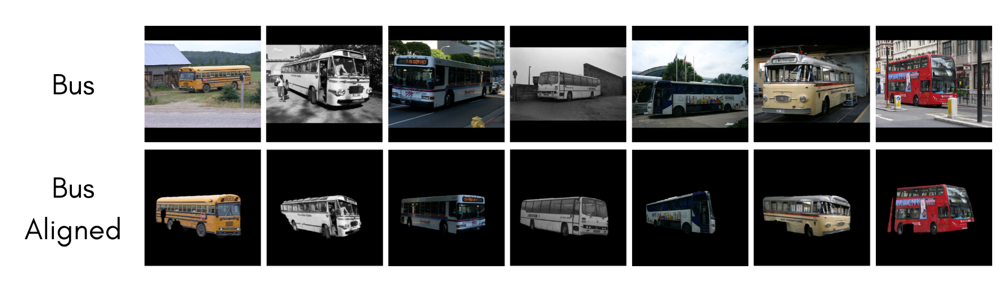
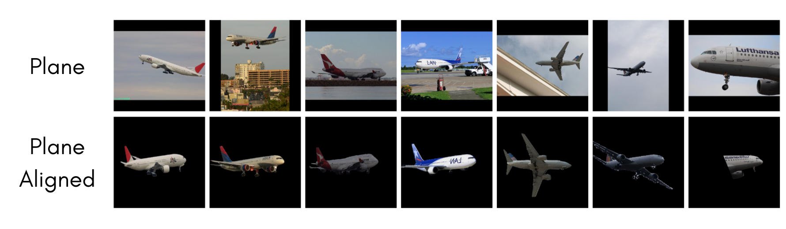
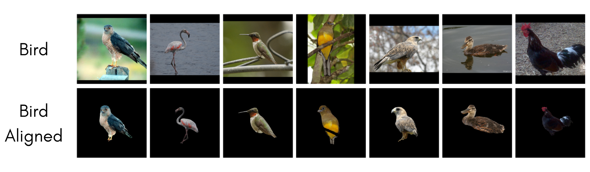
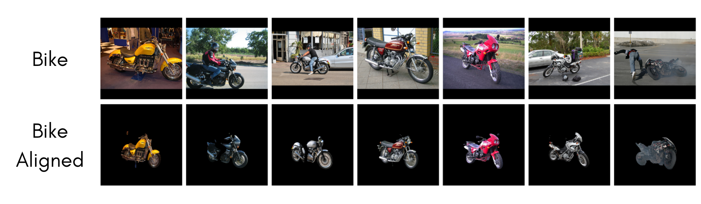
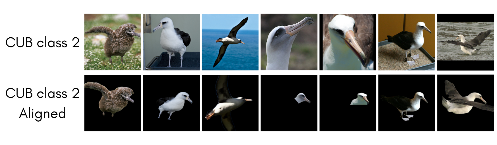
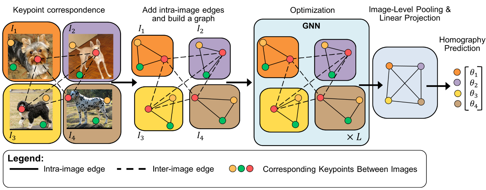
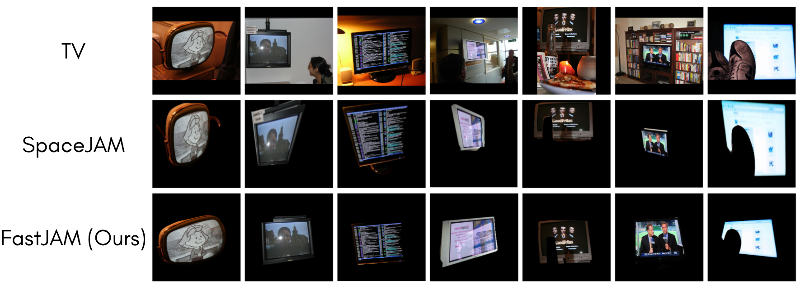
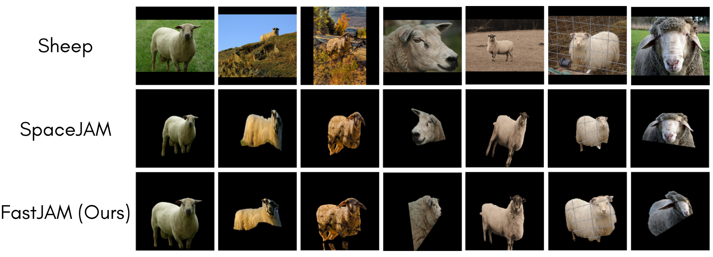
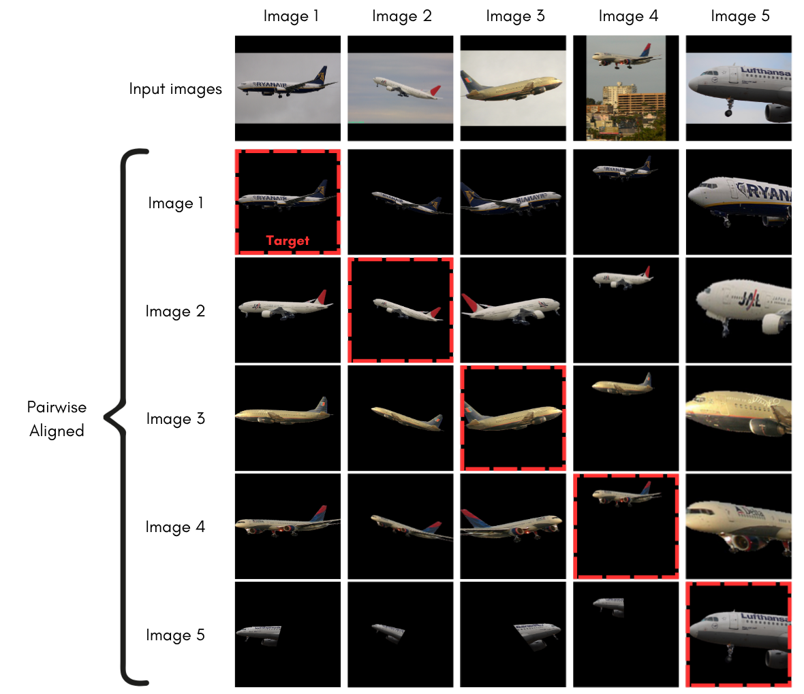
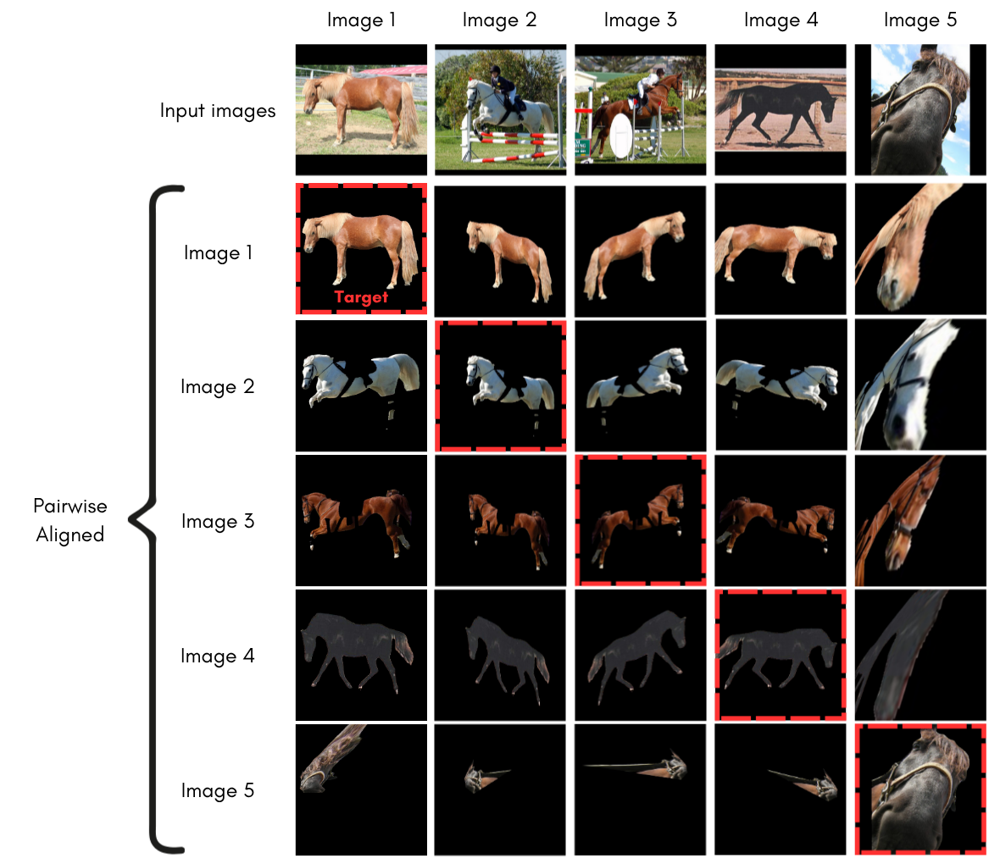

Joint Alignment (JA) of images aims to align a collection of images into a unified coordinate frame, such that semantically-similar features appear at corresponding spatial locations. Most existing approaches often require long training times, large-capacity models, and extensive hyperparameter tuning. We introduce FastJAM, a rapid, graph-based method that drastically reduces the computational complexity of joint alignment tasks. FastJAM leverages pairwise matches computed by an off-the-shelf image matcher, together with a rapid nonparametric clustering, to construct a graph representing intra- and inter-image keypoint relations. A graph neural network propagates and aggregates these correspondences, efficiently predicting per-image homography parameters via image-level pooling. Utilizing an inverse-compositional loss, that eliminates the need for a regularization term over the predicted transformations (and thus also obviates the hyperparameter tuning associated with such terms), FastJAM performs image JA quickly and effectively. Experimental results on several benchmarks demonstrate that FastJAM achieves results better than existing modern JA methods in terms of alignment quality, while reducing computation time from hours or minutes to mere seconds.





We intoduce FastJAM which operates through a three-stage pipeline: First, it leverages an off-the-shelf image matcher to compute pairwise correspondences between all image pairs in the collection. These correspondences are then constructed into a graph, as part of the construction of the graph, the Keypoints are being clustered via a rapid nonparametric clustering algorithm. Finally, a lightweight graph neural network aggregates these correspondences and predicts homography parameters for each image through image-level pooling. The use of our novel Inverse-Compositional loss for Keypoints eliminates the need for complex regularization terms and extensive hyperparameter tuning.



FastJAM demonstrates significant speed improvements over recent joint alignment methods. The table below compares runtime performance on three SPair-71k categories, showing that FastJAM achieves results in under a minute while other methods require over an hour.
| Method | # Params | # Losses | # HP | Atlas-free | # Epochs | Runtime (hh:mm:ss) |
|---|---|---|---|---|---|---|
| Neural Congealing Ofri et al., CVPR 2023 |
28.7M | 8 | 8 | 8,000 | 01:18:30 ± 00:06:18 | |
| ASIC Gupta et al., ICCV 2023 |
7.9M | 4 | 5 | 20,000 | 01:06:38 ± 00:00:38 | |
| SpaceJAM Barel et al., ECCV 2024 |
0.016M | 1 | 0 | 700 | 00:06:00 ± 00:00:12 | |
| FastJAM (Ours) NeurIPS 2025 |
0.13M | 1 | 0 | 600 | 00:00:49 ± 00:00:04 |
Key Results: FastJAM achieves 95x faster runtime compared to Neural Congealing and 7.4x faster than SpaceJAM, while maintaining better or equal alignment quality.


@inproceedings{Hirsch:NeurIPS:2025:FastJAM,
title={{FastJAM}: a Fast Joint Alignment Model for Images},
author={Hirsch, Omri and Weber, Ron Shapira and Ifergane, Shira and Freifeld, Oren},
year={2025},
journal={NeurIPS},
}